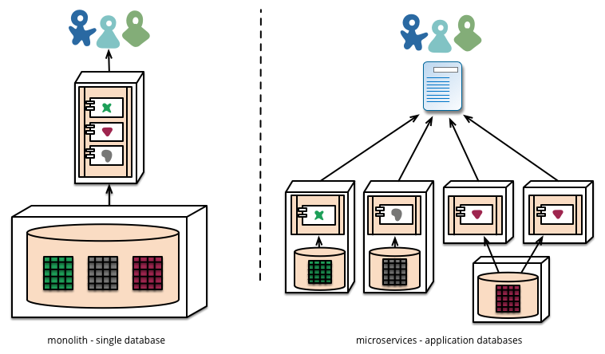

class: center, middle <img src="images/maelstrom_logo.png" width="40%"> # Maelström _Framework para videojuegos multijugador masivo online_ _**Andrés Ortiz Corrales**_ ??? Agradecimientos --- layout: true background-image: url(images/maelstrom-bg.png) --- ## ¿Qué es un MMO? * **MMO**: _Massively Multiplayer Online (Game)_ <center> <img src="images/wow.jpg" width="40%"> <br> <i class="footnote">World of Warcraft y Clash of Clans</i> </center> ??? * Multiplayer: 2~64 jugadores * MMO: >100 -- count: false * **Multiplayer vs MMO** --- ## ¿Qué es Maelström? Prototipo Open-Source de un videojuego **Multijugador Masivo Online** de estrategia comercial * **GitHub:** <https://github.com/demiurgosoft/maelstrom> * **Licencia:** GNU AGPL-3.0 <center> </br> <i class="footnote">Captura de pantalla de Maelström</i> </center> ??? * Analizar los MMO * Proponer soluciones ¿Por qué no hay mas mmo? * Desarrollar prototipo (MVP) y analizar viabilidad con tecnología extensible y modernas * Proponer un framework? --- ## Problemas * Escasa documentación * Tecnologías antiguas * WoW (2004) * Ogame (2002) * Clash of Clans (2012) * Sin framework ni tecnología específica ??? **<5 min mark** multiplayer=/=mmo --- ## Arquitectura <center> </br> <i class="footnote">Microservice Architecture, Fowler</i> </center> ??? * Qué son los microservicios * Ventajas: * Tecnologia especifica * Escalabilidad * Extensibilidad --- ## Arquitectura <center> <img src="images/server_arch.png" width=100%></br> <i class="footnote">Propuesta inicial de diseño</i> </center> ??? Buscar mínima latencia Orientacion a servicios (SOA) --- ## Arquitectura <center> </br> <i class="footnote">Arquitectura del prototipo</i> </center> ??? Simplificacion en World Arquitectura actual Comentar bots --- ## Arquitectura: Cliente * Servidor independiente del cliente * Cliente Web * Bot * Comunicación con tecnologías estándar * HTTP * Websockets <center> <img src="images/websocket.png" width="45%"></img> </center> ??? Cliente web desarrollado Asíncrono: El cliente obtiene la información de forma dinámica y la actualiza de forma asíncrona de diversos servidores --- ## Planificación y desarrollo * Metodología ágil * Historias de Usuario: 39 * PH totales: 338 * Horas Totales: 456 horas <center> <img src="images/burndown.png" width="64%"></img></br> </center> ??? **10 min mark** 1.35 horas por PH \>250 issues \>20 milestones --- ## Implementación * **4 Módulos** <center> </center> ??? Comentar desarrollo: test,prototiping, LOC --- ## Implementación: Pruebas * _World_ * Tests: 32 * Cobertura: 79% * _Users_ * Tests: 14 * Cobertura: 95% * _**Total**_ * Tests: 46 * Cobertura: 82% <center> <img src="images/users_coverage.png" width=100%></br> <i class="footnote">Análisis de cobertura de Usuarios</i> </center> ??? Comentar desarrollo LOC --- ## Implementación: Pruebas <center> <img src="images/world.png" width=80%></br> <i class="footnote">Evolución del servicio de mundo</i> </center> --- ## Tecnología <img src="images/logos/nodejs.png" height=80></img> <img src="images/logos/express.png" height=50></img> Desarrollo del servidor con _javascript_, **Node.js** y el framework **express** ---------- <img src="images/logos/mongodb.png" height=120></img> <img src="images/logos/mongoose.png" height=90></img> Base de datos principal con **MongoDB** y **mongoose** ------- <img src="images/logos/ajax.png" height=80></img> <img src="images/logos/socketio.png" height=70></img> <img src="images/logos/jwt.svg" height=80></img> Comunicación cliente-servidor mediante **Ajax**, implementación de _websockets_ con **socket.io** y autentificación con **JSON Web Tokens** --- ## Tecnología <img src="images/logos/react.png" height=90></img> <img src="images/logos/jquery.gif" height=90></img> <img src="images/logos/bootstrap.png" height=90></img> Cliente desarrollado con **React**, **JQuery** y **Bootstrap** --------- <img src="images/logos/browserify.png" height=90></img> </img> Empaquetamiento del cliente con **browserify** y templating con **ejs** --- ## Tecnología <img src="images/logos/github.png" width=10%></img> Desarrolo abierto en **GitHub**, seguimiento mediante **issues** y **milestones** en cada repositorio ----- <img src="images/logos/travis.png" width=10%></img> <img src="images/logos/chai_mocha.png" width=20%></img> <img src="images/logos/coveralls.png" width=15%></img> <img src="images/logos/gemnasium.png" width=10%></img> Integración continua con **Travis.ci**, tests con **mocha** y **chai**, cobertura con **coveralls**, análisis de dependencias con **gemnasium** ------- <img src="images/logos/npm.png" width=15%></img> </img> </img> Gestión de paquetes y despliegue con **npm**, **heroku** y **openshift** --- class: center, middle # Demo <!--iframe src="http://maelstrom-mmo.herokuapp.com/" width="100%" height=600px></iframe--> --- ## Conclusión y trabajos futuros * **Problemas** * Arquitectura de servidor * Sistema distribuido * Estructura de datos * **Conocimientos Adquiridos** * **Asignaturas Relevantes** * **Trabajos Futuros** * Posible Comercialización --- ## Conclusión y trabajos futuros <center> </br> <i class="footnote">Arquitectura propuesta para el Servicio "World"</i> </center> ??? Comentar dificultades en escalabilidad --- layout:false class: center, middle <img src="images/maelstrom_logo.png" width="40%">